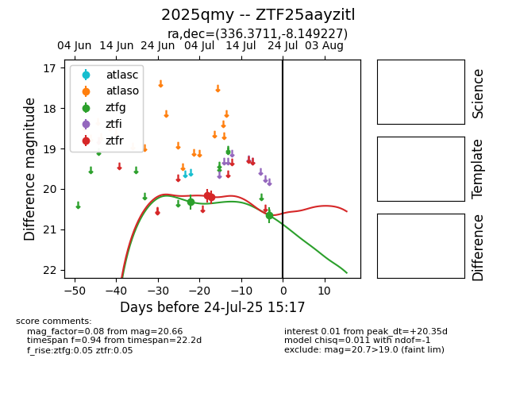

Target 2025qmy at 2025-07-24 15:17, see:
FINK: fink-portal.org/2025qmy
Lasair: lasair-ztf.lsst.ac.uk/objects/2025qmy
ALeRCE: alerce.online/object/2025qmy
TNS: wis-tns.org/object/2025qmy
YSE: ziggy.ucolick.org/yse/transient_detail/2025qmy
alt names
ZTF25aayzitl (ztf,fink)
2025qmy (tns,yse)
coordinates:
equatorial (ra, dec) = (336.3711,-8.14923)
galactic (l, b) = (54.8406,-50.61875)
photometry
last ztfg=20.66, ztfr=20.21
2 ztfg, 2 ztfr detections
